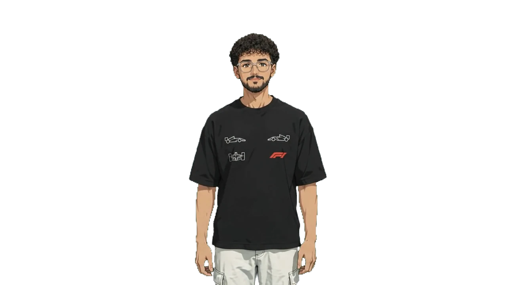

A little context
Who I am
Bio to add. Add a short introduction here.
Kochi, Kerala
Hello there, I’m a
Building AI-driven products at White Matrix.

Ask Haniel
A little context
Bio to add. Add a short introduction here.
How I work
Live telemetry
Every channel reads straight from the portfolio itself, refreshed as the work grows.
GitHub activity
Loading the last year of commits from GitHub…
Process
The same four steps sit behind every project, whether it takes a weekend or a few months.
What’s next
Have an idea, a role or a project in mind? I’d love to hear about it, and I usually reply within a day.
Experience
A practical timeline of the work, teams and tools that have shaped my approach.
Selected work
A selection of projects, experiments and collaborations. Choose a card to see the details.
A bit more about me
Bio to add. Add two or three sentences about your background and the work you enjoy doing.
Longer bio to add. Share a little more about how you think, collaborate and make things.
Explore my work ↗My toolkit
Services
A clear look at the work I offer, what each engagement can include and where we can start.
Have a project, collaboration or opportunity in mind? Tell me what you need and I’ll get back to you.
Start a conversation ↗Contact
For a project, collaboration or role, send a note with a few details. I’ll get back to you as soon as I can.
Get in touch
Tell me what you’re working on, or reach out directly using one of the links below.